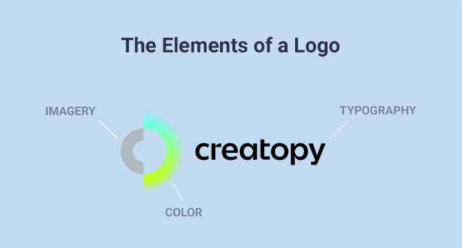
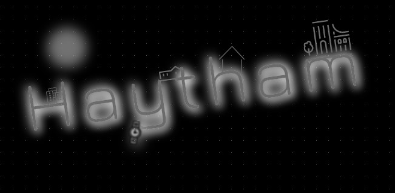
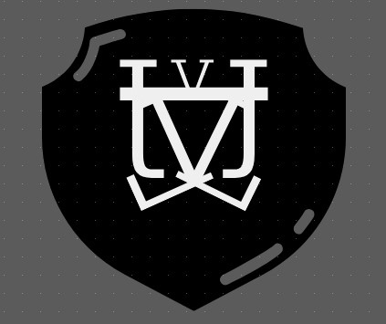

A logo is a symbol that’s represented by an image, text, shape or a combination of these elements. When designed properly, a business logo conveys what a company does, its core values, ideals, and mission.
There are several types of logos: emblems, pictorial marks, logotypes, lettermarks, abstract logos, mascot logos, and combination logos.
A logo is not just a symbol that you place on your website, social media, and marketing materials. It serves various purposes, such as:
Helping you define your brand identity. A good logo can help customers determine your industry, the products/services you offer, the target audience, or brand values .
Making you stand out from the crowd. The fact that you can use your brand logo to distinguish yourself from competitors is among the most important reasons why you should spend a lot of time coming up with a unique mark that helps you make a stand.
Building brand recognition. A well-crafted, creative logo can create a strong visual association, which means that you’ll be able to build a solid brand in the long run.
Now that you know what a logo is and its purpose let’s break down each element it’s made of.
What Are The Elements of a Logo?

Company logo design doesn’t necessarily have to contain all of these elements. It can consist of at least one element or a combination of at least two.
Here are the three main elements of a logo:
A few examples of famous brands that use typography in their creative logo are Disney, Google, LinkedIn, Coca-Cola, or Netflix.
Some companies go for the full business name in the logo, which works great if the name is short enough, like the examples above. You also have the option to use an abbreviation of your business’s name (like NASA), or only the first letter, in case the company name has only one word.
The imagery can be anything from an icon to a shape, a symbol, an abstract geometric element, or an intricate image.
In case you end up using something more complex, it’s essential to make sure that your logo will look clear even after you resize it to fit smaller placements.
We’ve talked about logo colors quite a lot in a recent article where we analyzed 40 logo color combinations that go great together. So it’s safe to say that color plays a significant role in a company logo design.
Choosing the best colors for your brand logo goes beyond what colors look best or what you personally like. It’s a strategic decision that tells people how you will be perceived.
Usually, a logo color palette is made out of up to three colors, carefully chosen to send the right message.
Let’s go through the meaning of a few colors:
A logo is a strategic tool meant to give your company identity. To make sure that happens, your business logo must check a few crucial characteristics that will help you stand out from the competition.
Yes, it’s important to look nice, but it’s more important for the logo to prove viable in the long run.
The characteristics of a logo also answer the question “what makes a good logo.
The majority of famous logos are defined by these five characteristics. Let’s go through them.
Not many brand logos are memorable from the first time you see them, but this definitely something you should aim for.
When people can easily recall how your logo looks and your brand’s name, they are more likely to connect with you.
Your brand’s story should help you with the logo’s authenticity because aside from being memorable, it should also be unique. Define the things that make your brand different from the competition and strive to come up with something that will differentiate your company while creating a powerful visual identity.
The entire purpose of designing a creative logo is to have an element that helps you build a strong brand identity, so the business logo must be relevant to your audience and industry.
From logo colors to the font, every decision will impact how people perceive your brand when they look at the logo.
For example, a company that sells kids toys can choose bright, fun colors that suggest entertainment, playfulness, and energy. On the other hand, a jewelry company can use a hand-written, cursive font, while tech companies can go with a geometric kind of font.
Before starting the design process of your brand logo, thoroughly research your audience and industry, and guide your creative process according to the emotion you want to trigger.
If you think about it, many of the world’s most famous logos are surprisingly simple. Nike is probably the best example here.
The reason why simple logo design works is that most consumers focus on logos briefly, and so a simple design has a greater chance of being understood.
The trick here is to find and use a symbol or wordmark logo that can convey your brand’s personality and values. Think of ways of designing your creative logo for it to be concise and easily readable.
Think long-term. When you make your own logo, ask yourself whether it will work years from now. The key is to create your own logo that remains fresh and relevant over the years.
Even though many popular brands have tweaked their logos during their existence or went through the process of rebranding, you don’t want to do that too often. Changes that occur too often can impact consumers’ understanding and perception of your brand.
The best thing to do is step aside from the logo design trends, remove clutter, and keep only the elements that express your brand’s core ideas and values. The best logo design doesn’t aim to be popular for a season, but for many years to come.
A brand logo can be used in various situations, such as on the website, on social media visuals, in presentations, packaging, merch, or print marketing materials.
With that being said, the best logo design should keep its quality regardless of the medium, platform, or device it’s being used on.
Whether you put your creative logo on a billboard or resize it to fit on a small cup, it has to look legible no matter what. To create a responsive brand logo, focus primarily on its simplicity, as we’ve seen before. In this case, less is more.
Now let’s move on to another important topic—logo importance.
Since logos are a crucial part of a brand’s identity, they are used in advertising as well.
You’ve probably seen all kinds of ads, whether online or on TV, where the company’s logo appears throughout the ad or at the end. And there are a few reasons why that happens.
Here’s why logos are important in advertising.
Suppose your audience is watching one of your ads for the first time online or on TV. In the ad, you talk about the product or service you’re offering, and you show it, featuring the logo as well.
At that moment, the consumer will be able to connect the product/service advertised and your company.
Even if you run a brand awareness campaign and your company logo design is visible at the end of the ad, it still serves the same purpose. It helps the consumer connect the dots between the problem you referred to and how your company is involved in assisting people in solving it.
Needless to say that using a creative logo on all your ads will enhance the brand’s exposure and boost its recognition in the industry.
On top of that, if you have an attractive logo design and you pair it with an inviting ad, you will surely pique your audience’s curiosity. People love discovering and trying out new brands, so put yourself out there and let the world notice you.
Incorporating logos in advertising will help build brand trust overtime. And the more people see your ads next to your logo, the faster they will get used to your brand.
Consistency is vital because you want your audience to become familiar with your logo.
When people look at ads, they also look at the logo, especially if they can’t tell right away the company’s name.
One of the great things about using your business logo in advertising campaigns is sending a consistent message across all your channels—online and offline.
Sometimes, you may not have the time to create an elaborate advertising campaign. What you can do is create an ad with only a few elements: text, colorful background, compelling image, and your brand logo.
You can also use your logo in advertising to come up with something creative, so a versatile logo can have many different purposes.
A logo is like a fingerprint—unique and rooted in a company’s DNA. While certain symbols are associated with particular industries, you can create your own logo that’s different and can make people pay more attention to you.
For example, if you have a tech company that includes an animal’s name (like Lion Enterprises), you can create a logo that features the symbol of a lion. That will surely draw people’s attention because you don’t typically associate lions with tech companies.
A good logo shows who you are, your values, and what you bring new to the industry.
Now that we’ve walked through the theory let’s get more practical and go through all the major steps of designing a logo.
Before you even start thinking about designing your logo, you need to determine what type of logo you’re going to create.
There are seven types of logos you can choose from:
As you can see, there are quite a few categories you can choose from, and it’s an important decision to make. Until you decide on the type of logo, you can’t move on to the next steps, which refer to the logo elements.
The type of logo you chose in the previous step will most probably define the style as well.
For example, an emblem logo is almost always classic, so that’s one style you can go for.
Pictorial mark logos definitely have a minimalist feel to them, but they can also look modern.
Logotypes can have different styles depending on the logo font you’ll go for. It can be anything from vintage/retro to handcrafted or classic.
Lettermarks can be modern or minimalist, while an abstract logo will hint towards a modern look.
Mascot logos definitely have a playful style, but you can also add a vintage touch to them if that defines your brand.
Combination logos can hardly be minimalist, but you can make them look modern, vintage, or handcrafted.
To sum it all up, there are several styles you can pick for your logo, and this decision will be most impacted by the type of logo you’ll go for and your industry.
Logo trends usually last for one season, so it’s best to avoid them.
Some logos that i created
 